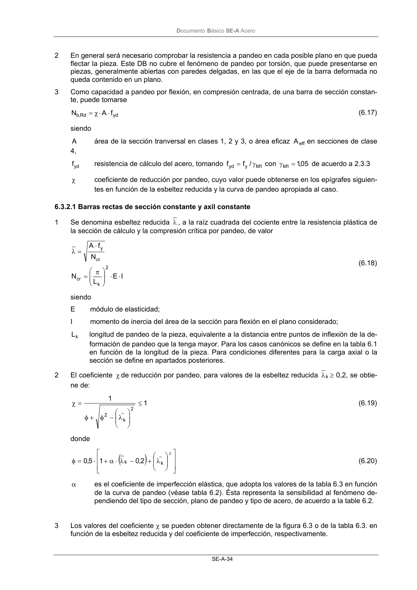

DB-SE-A · 6.3.2.1 Barras rectas de sección constante y axil constante · versión 2007-10-23
SHA256: 9ed9ea694aabfbda3bfbbef40dfe9223fde05d13c35bc2ba9751e5a96a22a64f · página física 36 de 168 · métodos de encabezado
solo si están cotejados.
Formatos: Markdown · JSON de bloques · PDF p. 36 · imagen PNG
Documento Básico SE-A Acero
SE-A-34
2
En general será necesario comprobar la resistencia a pandeo en cada posible plano en que pueda
flectar la pieza. Este DB no cubre el fenómeno de pandeo por torsión, que puede presentarse en
piezas, generalmente abiertas con paredes delgadas, en las que el eje de la barra deformada no
queda contenido en un plano.
3
Como capacidad a pandeo por flexión, en compresión centrada, de una barra de sección constan-
te, puede tomarse
yd
Rd
,
b
f
A
N
⋅
⋅
χ
=
(6.17)
siendo
A
área de la sección tranversal en clases 1, 2 y 3, o área eficaz
eff
A
en secciones de clase
4,
yd
f
resistencia de cálculo del acero, tomando
1
M
y
yd
/
f
f
γ
=
con
05
,1
1
M =
γ
de acuerdo a 2.3.3
χ
coeficiente de reducción por pandeo, cuyo valor puede obtenerse en los epígrafes siguien-
tes en función de la esbeltez reducida y la curva de pandeo apropiada al caso.
6.3.2.1 Barras rectas de sección constante y axil constante
1
Se denomina esbeltez reducida λ , a la raíz cuadrada del cociente entre la resistencia plástica de
la sección de cálculo y la compresión crítica por pandeo, de valor
I
E
L
N
N
f
A
2
k
cr
cr
y
⋅
⋅
π
=
⋅
=
λ
(6.18)
siendo
E
módulo de elasticidad;
I
momento de inercia del área de la sección para flexión en el plano considerado;
k
L
longitud de pandeo de la pieza, equivalente a la distancia entre puntos de inflexión de la de-
formación de pandeo que la tenga mayor. Para los casos canónicos se define en la tabla 6.1
en función de la longitud de la pieza. Para condiciones diferentes para la carga axial o la
sección se define en apartados posteriores.
2
El coeficiente χ de reducción por pandeo, para valores de la esbeltez reducida
k
λ ≥ 0,2, se obtie-
ne de:
1
1
2
_
k
2
≤
λ
−
φ
+
φ
=
χ
(6.19)
donde
(
)
λ
+
−
λ
⋅
α
+
⋅
=
φ
2
_
k
k
2,0
1
5,0
(6.20)
α
es el coeficiente de imperfección elástica, que adopta los valores de la tabla 6.3 en función
de la curva de pandeo (véase tabla 6.2). Ésta representa la sensibilidad al fenómeno de-
pendiendo del tipo de sección, plano de pandeo y tipo de acero, de acuerdo a la table 6.2.
3
Los valores del coeficiente χ se pueden obtener directamente de la figura 6.3 o de la tabla 6.3. en
función de la esbeltez reducida y del coeficiente de imperfección, respectivamente.
